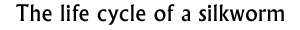

Follow-up 7  |
|
Objectives: To learn that animals reproduce as part of their life cycle and in that life cycle there are distinct processes and stages.
Materials: Writing and drawing materials. Silkworm pictures.
Class set-up: Individuals and group work.
Vocabulary: pupate, pupa, reproduce, cocoon,
Activity: Ask the children to play the silkworm challenge. Note the different stages the worms go through. When they finish playing they should go to the 'Learn more about silkworms' page (you can read out extra information from the 'Silkworm' background information document).
After reading this, the children should get into groups. They should discuss the different stages of the lifecycle of the silkworm. Then ask them to put the different stages in order. Each individual will illustrate a different stage in the lifecycle. Groups can then assemble these illustrations in order to show a pictorial lifecycle chart. It is possible to order silkworm education kits for children. They provide an excellent study for science modules in the classroom. They can see the silkworms spin their cocoons and will be able to unravel the silk filament in the classroom. Searching on the internet for teaching resources on silkworms will help you find a number of useful ideas. For example, one teacher had their class make silk bookmarks. You cut out different shapes from cardboard and stick it on a bottle. Place the worm on top, just as it is ready to start spinning its cocoon. The worm can not find a corner to spin its cocoon, will criss cross over the top of the card and around the edges. Once the worm becomes a pupa, take it off the card. Carefully remove the silk from the card and you have a silk woven shape. Background information:
N/A
© The British Museum |